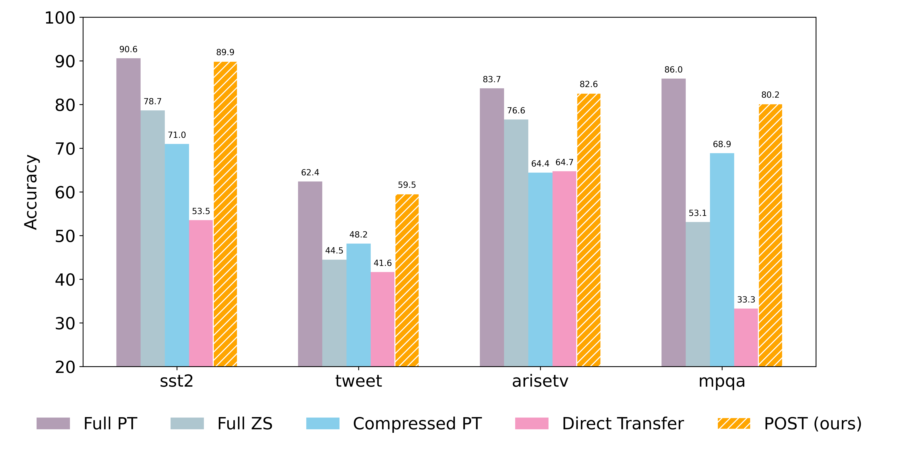

Prompting has become a dominant paradigm for adapting large language models (LLMs). While discrete (textual) prompts are widely used for their interpretability, soft (parameter) prompts have recently gained traction in APIs. This is because they can encode information from more training samples while minimizing the user's token usage, leaving more space in the context window for task-specific input. However, soft prompts are tightly coupled to the LLM they are tuned on, limiting their generalization to other LLMs. This constraint is particularly problematic for efficiency and privacy: (1) tuning prompts on each LLM incurs high computational costs, especially as LLMs continue to grow in size. Additionally, (2) when the LLM is hosted externally, soft prompt tuning often requires sharing private data with the LLM provider. For instance, this is the case with the NVIDIA NeMo API. To address these issues, we propose POST (Privacy Of Soft prompt Transfer), a framework that enables private tuning of soft prompts on a small model and subsequently transfers these prompts to a larger LLM. POST uses knowledge distillation to derive a small model directly from the large LLM to improve prompt transferability, tunes the soft prompt locally, optionally with differential privacy guarantees, and transfers it back to the larger LLM using a small public dataset. Our experiments show that POST reduces computational costs, preserves privacy, and effectively transfers high-utility soft prompts.
Method overview for POST. 1 An LLM provider compresses their LLM $\Phi_t$ into a smaller model $\Phi_s$ through knowledge distillation. 2 The private data owner learns a specific soft prompt $p_s$ on $\Phi_s$ using the private dataset (optionally with differential privacy guarantees). 3 The LLM provider obtains the soft prompt $p_t$ for solving the user's task by transferring $p_s$ to the target LLM $\Phi_t$ -- solely relying on a small public dataset and no access to the private data for transfer.
more aggressive knowledge distillation without emphasis on the student model’s performance:
| Model | Layer Number | Hidden Dimension | Head Number | Parameter Num (M) |
|---|---|---|---|---|
| Roberta-base | 12 | 768 | 12 | 125 |
| Our distilled Roberta-base | 2 | 768 | 12 | 53 |
| GPT2-XL | 48 | 1600 | 25 | 1560 |
| Our distilled GPT2-XL | 4 | 1600 | 25 | 205 |
| Llama2-7b | 32 | 4096 | 32 | 6738 |
| Our distilled Llama2-b | 2 | 4096 | 32 | 667 |
\(\mathcal{L}_1\): align the predictions of the prompted source and target models.
\(\mathcal{L}_2\): align the direction change induced by the private prompt between \(\Phi_t\) and \(\Phi_s\).
\(\alpha\): control the balance between the two losses.
Transfer of Llama2-7B
Confidential and DP (ε=8) Transfer of Llama2-7B
POST is significantly faster than directly prompt tuning on the full model.
We compare POST with the following baselines:
| Method | Φs | sst2 | imdb | tweet | arisetv | mpqa | disaster |
|---|---|---|---|---|---|---|---|
| OPT | 2-Lay | 81.31 | 68.44 | 38.35 | 82.00 | 58.50 | 46.00 |
| OPT | GPT2 | 81.65 | 79.55 | 43.40 | 78.26 | 77.60 | 55.60 |
| DP-OPT | GPT2 | 72.59 | 69.53 | 24.90 | 30.44 | 61.80 | 48.90 |
| ZST | 2-Lay | 62.38 | 70.57 | 42.80 | 58.33 | 33.31 | 43.55 |
| ZST with DP | 2-Lay | 53.55 | 69.47 | 41.65 | 59.54 | 32.70 | 43.49 |
| POST (ours) | 2-Lay | 90.14 | 86.27 | 61.70 | 86.71 | 87.37 | 62.84 |
| DP-POST (ours) | 2-Lay | 89.91 | 83.26 | 59.55 | 82.60 | 80.17 | 58.62 |
We present POST, a framework for the private transfer of soft prompts that enables adapting LLMs with private user data while protecting both the user’s privacy and the LLM provider’s intellectual property. POST relies on distillation to enable an LLM provider to share a small model with limited utility to a client for local prompt tuning on their private data, optionally with DP guarantees. Using our new prompt transfer method that leverages a small set of public data, the LLM provider can then transfer the prompt to their model. Our experiments highlight that the POST framework achieves significant improvements on the private tasks through the prompt transfer, improves the computational efficiency of prompt tuning and outperforms all private prompt transfer baselines. Thereby, our work paves the way for more trustworthy application of LLMs.
@inproceedings{wang2025post,
title = {Efficient and Privacy-Preserving Soft Prompt Transfer for LLMs},
author = {Wang, Xun and Xu, Jing and Boenisch, Franziska and Backes, Michael and Choquette-Choo, Christopher A. and Dziedzic, Adam},
year = {2025},
booktitle = {Forty-Second International Conference on Machine Learning (ICML)}
}